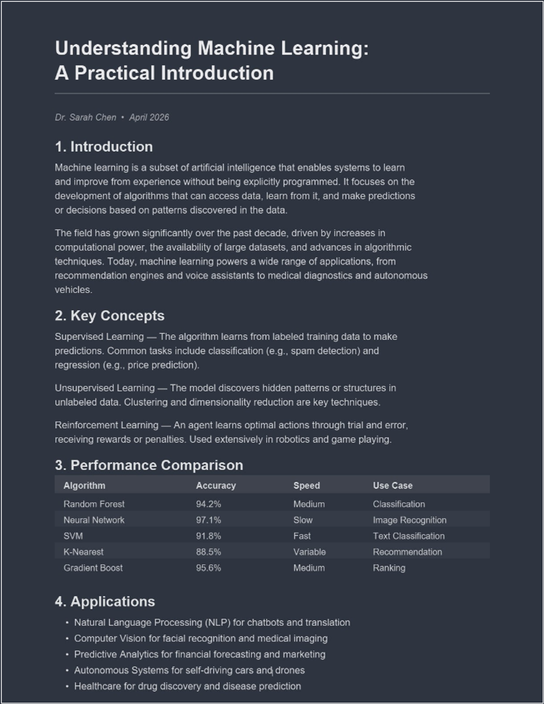

iPadでPDFをダークモードにする方法：目の疲れなく読む
iPadはPDFを読むのに最適なデバイスの一つですが、iPadOSのダークモードはシステムインターフェースのみを変更します。PDFページは「ファイル」、Safari、ほとんどのリーダーアプリで依然としてまぶしい白い背景のまま表示されます。iPadで学習、研究、夜間の読書をしている方のために、本当のダーク背景を実現する方法をご紹介します。
SafariでPDFを変換する
- iPadのSafariでPDF Dark Mode Converterを開きます。
- アップロードボタンをタップし、「ファイル」、iCloud Drive、またはその他の接続先ストレージからPDFを選択します。
- ドロップダウンメニューからテーマを選択します。Dracula、Nord、Solarizedなど人気の開発者テーマを含む16以上の選択肢があります。
- 変換されたPDFが自動的にダウンロードされます。「ファイル」、GoodNotes、Notability、またはお好みのリーダーで開いてください。
このツールは完全にSafari内で動作します。ファイルはiPad上に留まり、サーバーに送信されることはありません。GPU高速処理により、大きなマニュアルでも数秒で変換が完了します。

ノートアプリとの互換性
GoodNotes、Notability、またはPDF ExpertでApple Pencilを使用している場合、ダークモードPDFにも通常の文書と同じように注釈を付けることができます。ダーク背景はファイル自体の一部なので、メモ、ハイライト、描画がすべて正常に表示されます。
iPadの「色を反転」機能はどうですか？
iPadOSには「スマート反転」機能（「設定」>「アクセシビリティ」>「画面表示とテキストサイズ」>「スマート反転」）があり、画像を保持しながら画面の大部分の色を反転します。しかし、PDFに対する効果は不安定です。見栄えの良いページもあれば、グラフが反転したり色が不自然になるページもあります。また、反転は表示上の効果のみで、ファイルには保存されません。
iPadユーザーにとって変換が優れている理由
- ダーク背景が特定のリーダーだけでなく、すべてのアプリで一貫して表示されます。
- 好みのテーマや色調を正確に選択できます。カスタムカラーオプションで任意の16進カラーコードを入力できます。
- 変換後のファイルでも注釈やハイライト機能が正常に使用できます。
- 埋め込みテキストレイヤーにより、テキストの検索と選択が引き続き可能です。
- AirDropでダーク版を共有でき、受信者にも同じ表示で届きます。
より小さな画面で読む場合は、iPhoneやAndroidでダークモードを有効にする方法をご覧ください。主にPCで読む場合は、Windowsガイドでプラットフォーム別のヒントをご確認ください。
今すぐ始めましょう：iPadでPDF Dark Mode Converterを開き、テーマを選んで数秒でPDFを変換できます。無料・プライベート、Safariで直接動作します。
よくある質問
いいえ、iPadOSのダークモードはシステムインターフェースのみを変更します。PDFページは「ファイル」、Safari、リーダーアプリで元の色のまま表示されます。
はい。iPadのSafariでPDF Dark Mode Converterを開き、PDFをアップロードして16以上のテーマから選択してください。変換されたファイルはすぐにダウンロードされます。
はい、変換されたPDFはApple Books、GoodNotes、Notability、PDF Expert、その他PDFを開けるすべてのiPadアプリで正常に動作します。